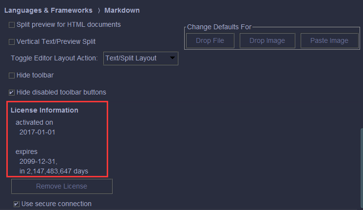

PhpStorm插件之Markdown-Navigator
简介
Markdown-Navigator可谓是PhpStrom内置markdown插件的升级版，支持更多工具快捷方式和功能点，如：
- 加强版工具栏
- 粗体
- 斜体
- 删除线
- 行内代码高亮
- 插入链接
- 有序无序列表
- 任务列表
- 插入表格，插入删除行、列
- 格式化表格
- 格式换文档
问题
默认下载版本是付费的，作为一个普通码农> <，希望有能力的都支持正版。
破解方案
1.到此处下载两个class文件。
2.找到Markdown-Navigator安装目录下的idea-multimarkdown.jar。
C:/Users/{username}/.PhpStorm2018.1/config/plugins/idea-multimarkdown/lib

3.用压缩软件不解压打开jar包，替换上面两个class文件。

4.重启PhpStorm即可，此时Markdown-Navigator插件已破解，所有功能开启。
